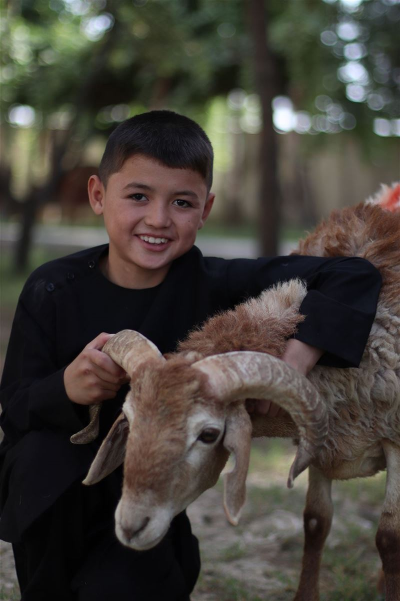

Adak, akika ve şükür kurbanlarınızı yıl boyunca kabul ediyor; usulüne uygun olarak kesilen kurban etlerini ihtiyaç sahibi ailelere ulaştırıyoruz.
 Nafile kurban çalışmalarımızdan kareler
Nafile kurban çalışmalarımızdan kareler
Nafile kurban programımız, Kurban Bayramı dönemiyle sınırlı kalmayan ve yılın her ayı devam eden bir ibadet hizmetidir. Bağışçılarımız adak, akika veya şükür niyetiyle verdikleri vekâletleri; derneğimiz aracılığıyla ihtiyaç sahiplerine ulaştırır. Bu sayede bir yandan ibadet yerine getirilirken, diğer yandan yıl boyunca ihtiyaç sahibi ailelerin sofralarına et girmiş olur.
Kesimler veteriner kontrolünde ve İslami usullere uygun şekilde yapılır. Etler hijyenik koşullarda paketlenerek aynı gün dağıtılır. Her vekâlet, bağışçının adına kayıt altına alınır ve kesim esnasında kaydedilen video bağışçıyla paylaşılır.
Adak, akika ve şükür kurbanı vekâletleri yıl boyunca kabul edilir.
Veteriner kontrolünde, usulüne uygun kesim ve aynı gün hijyenik paketleme.
Her bağışçıya kesim ve dağıtım fotoğraflarıyla birlikte detaylı rapor sunulur.
Nafile kurban hizmetimiz, bağışçı talebinin alınmasından dağıtım raporuna kadar düzenli bir akış içinde yürütülür:
Bağışçının niyeti (adak, akika, şükür) kayıt altına alınır ve sesli arama ile vekâlet alınır.
Kurban için uygun yaş ve sağlık şartlarını taşıyan hayvan, veteriner kontrolüyle temin edilir.
İslami usüllere uygun şekilde kesim gerçekleştirilir ve kayıt altına alınır.
Etler hijyenik ortamda paketlenir ve aynı gün tespit edilen ihtiyaç sahibi ailelere ulaştırılır.
Kesim ve dağıtım görselleriyle birlikte tamamlanan vekâletin raporu bağışçıya iletilir.
Nafile kurban çalışmalarımızdan kareler:


.jpg)


Bu sayfa, sahadan yeni fotoğraflar eklendikçe güncellenecektir.
Nafile kurban hakkında merak edilenler:
Adak kurbanı; bir dileğin gerçekleşmesi için adak adayan kişinin, dileği gerçekleştiğinde yerine getirmesi gereken kurban ibadetidir.
Akika; yeni doğan bebek için şükür niyetiyle kesilen kurbandır ve doğumun yedinci gününden itibaren kesilebilir.
Bayram kurbanı yalnızca Kurban Bayramı günlerinde kesilir; nafile kurbanlar ise adak, akika ve şükür niyetiyle yıl boyunca kesilebilir.
Derneğimize iletişim kanallarından ulaşarak vekâlet formunu doldurmanız ve bağışınızı yapmanız yeterlidir; vekâletiniz dijital olarak kayıt altına alınır.
Etler aynı gün hijyenik şekilde paketlenir ve önceden tespit edilen ihtiyaç sahibi ailelere taze olarak ulaştırılır.
Kesim esnasında kaydedilen video ve dağıtım bilgileri bağışçıyla paylaşılır.